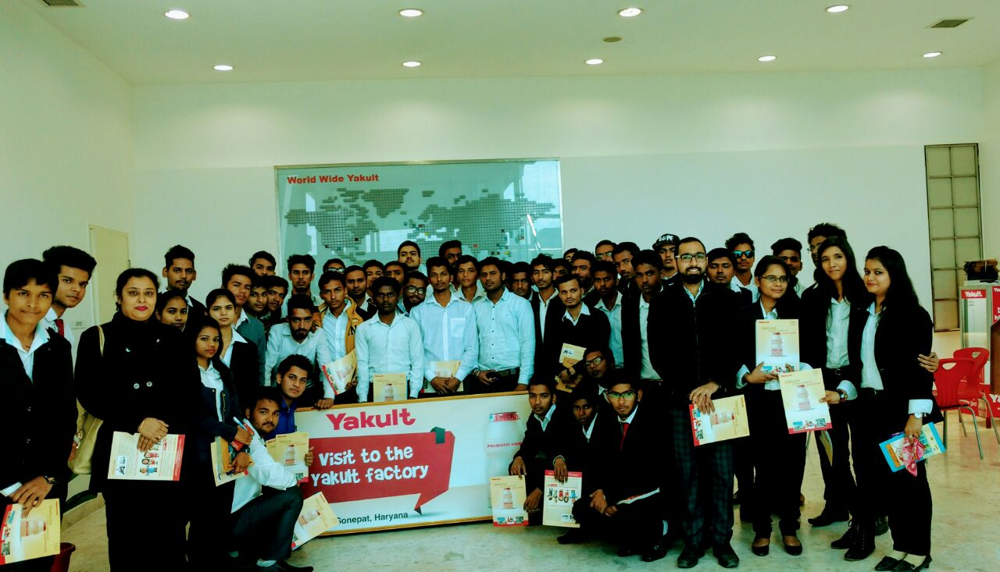
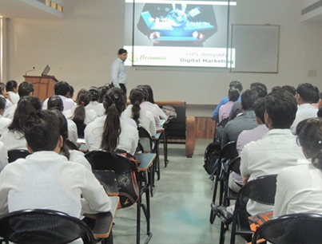

Industrial Visit

B.tech ECE students visit to Huawei
Industrial visit organised for ECE students for Huawei.It was a good experience for the students.

B.tech first year student visit to yakult
B.Tech 2nd sem students of Ash deparment visit at Yakult Danone Pvt Ltd.That was a wonderful experience.Students see the process how the things done in the industry.
Seminar

Seminar on Digital marketing is organized for all MBA and BBA students
Digital marketing seminar for the managment students. Students learn how to do digital marketing and how we can use social media for the digital marketing.
Hybrid app development seminar for 3rd and 5th sem on 13th oct
Hybrid app seminar organised by the Abhishek saxena an ibm training manager was amazing.
The technology (worklight) made by ibm is a platform for building app for any operating system.